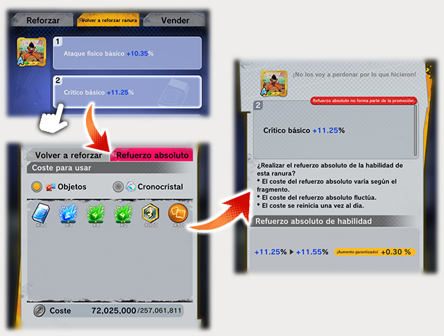

Fragmentos
Información detallada sobre los fragmentos disponibles en el juego.
Los fracmentos: objetos que tienen la habilidad de influir en los parámetros al ser equipados.
Los puedes obtener de las siguientes maneras:
1. Completando luchas que tengan fragmentos como recompensa
2. A través de intercambios en el Mercado

Equipación de fragmentos: Los fragmentos hacen efecto cuando están equipados. Puedes equiparlos en Menú > Personajes > Formación. 1. Elige el personaje al que quieres equipar un fragmento
2.Elige la ranura de equipo:

Información secreta de los fragmentos:
La rareza y la categoría de los fragmentos, así como las ranuras están estrechamente conectadas con las habilidades de los fragmentos. ¡No olvides estos tres aspectos y haz lo posible para obtener los fragmentos más poderosos!

Existen seis niveles de rareza, que de la más baja a la más alta son: Hierro, Bronce, Plata, Oro, Único y Platino.
Categorías y ranuras de los fragmentos

Las ranuras en la parte inferior de los fragmentos indican el estado de desbloqueo de las mismas. La intensidad de efecto más baja es de color verde, y la más alta, rojo. Por ello, recomendamos que prestes atención al color de las ranuras a la hora de buscar los mejores fragmentos. La categoría más baja es F, la más alta es "神" (Dios). La categoría viene definida por la intensidad de efecto de las habilidades de las ranuras. Puedes desbloquear ranuras reforzando fragmentos. Cuando desbloqueas una ranura, se asigna una habilidad de los efectos y potencia especificados. Después de asignarse una habilidad, se decide la categoría del fragmento en función de la intensidad de efecto. Solo conocerás el verdadero poder de un fragmento cuando lo refuerzas hasta el máximo. ¡Refuerza tus fragmentos y trata de sacar su máximo potencial!
Para lograr hacer esto se nececitan materiales que se consiguen en eventos o en la tienda

Ahora sobre el refuerso de los fracmentos :
Puedes volver a reforzar las ranuras de forma consecutiva. Puedes elegir entre 1 y 30 veces los refuerzos consecutivos, pero para ello debes poseer los objetos necesarios.
El refuerzo consecutivo se detiene por las siguientes razones:
1. El nivel de la habilidad del fragmento llega a naranja o superior, o rojo, según las condiciones de seleccionadas.
2. Se ejecutó el número de refuerzos seleccionado.
3. Tocaste el botón Interrumpir.
